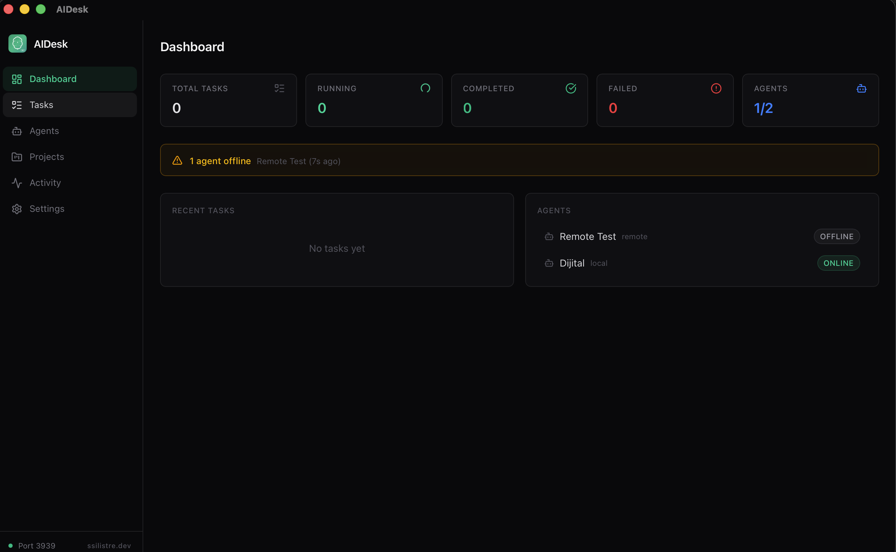

The native control panel for managing Claude Code AI agents. Create, assign, track, and stream in real-time. Claude Code yapay zekâ ajanlarını yönetmek için yerel kontrol paneli. Oluşturun, görevlendirin, takip edin ve canlı izleyin.

A complete desktop control panel for orchestrating Claude Code agents at any scale. Claude Code ajanlarını her ölçekte yönetmek için eksiksiz bir masaüstü kontrol paneli.
Create and manage local and remote agents from a unified dashboard. Monitor status and assign tasks efficiently.Birleşik bir panelden yerel ve uzak ajanlar oluşturun ve yönetin. Durumları izleyin, görevleri verimli atayın.
Organize tasks with critical, high, medium, and low priority levels. Automatic queue-based task distribution.Görevleri kritik, yüksek, orta ve düşük öncelik seviyeleriyle düzenleyin. Otomatik kuyruk tabanlı görev dağıtımı.
Watch agent execution in real-time with SSE-powered log streaming. See every step as it happens.SSE destekli canlı log akışıyla ajan çalışmasını anlık izleyin. Her adımı olduğu anda görün.
Connect remote agents with a single npx command. Firewall-friendly HTTP polling architecture.Tek bir npx komutuyla uzak ajanları bağlayın. Güvenlik duvarı dostu HTTP yoklama mimarisi.
Link tasks to projects and directories. Keep your work organized with project-based task grouping.Görevleri projelere ve dizinlere bağlayın. Proje tabanlı görev gruplama ile işinizi düzenli tutun.
Store API keys and secrets with AES-256-GCM encryption. Vault key file with strict OS-level permissions.API anahtarlarını ve sırları AES-256-GCM şifrelemesiyle saklayın. Sıkı işletim sistemi izinleriyle kasa dosyası.
Configure MCP servers and Git settings per agent. Seamless integration with your development workflow.Ajan bazında MCP sunucuları ve Git ayarları yapılandırın. Geliştirme iş akışınızla kesintisiz entegrasyon.
Switch between dark and light themes. Centralized theme system with smooth transitions.Karanlık ve aydınlık temalar arasında geçiş yapın. Akıcı geçişli merkezi tema sistemi.
Get notified when tasks complete, fail, or agents go offline. Native macOS notification integration.Görevler tamamlandığında, başarısız olduğunda veya ajanlar çevrimdışı olduğunda bildirim alın.
Comprehensive dashboard with task filtering, search, agent health monitoring, and offline warnings.Görev filtreleme, arama, ajan sağlık izleme ve çevrimdışı uyarıları içeren kapsamlı pano.
Set up local or remote agents through the AIDesk UI. Configure project paths, MCP servers, and Git settings.AIDesk arayüzü üzerinden yerel veya uzak ajanlar oluşturun. Proje yollarını, MCP sunucularını ve Git ayarlarını yapılandırın.
Create tasks with priority levels and assign them to agents. The orchestrator automatically distributes queued tasks.Öncelik seviyeleriyle görevler oluşturun ve ajanlara atayın. Orkestratör kuyruktaki görevleri otomatik dağıtır.
Agents execute via Claude Code SDK with real-time SSE log streaming. Track progress and get native notifications.Ajanlar Claude Code SDK ile çalışır, canlı SSE log akışı sağlar. İlerlemeyi takip edin ve yerel bildirimler alın.
Run agents on any machine with the aidesk-agent npm package. Agents poll the AIDesk server over HTTP, making it work through firewalls and NAT.
aidesk-agent npm paketi ile herhangi bir makinede ajan çalıştırın. Ajanlar AIDesk sunucusunu HTTP üzerinden yoklar, güvenlik duvarları ve NAT arkasında çalışır.
Backend & SecurityArka Uç ve Güvenlik
Native DesktopYerel Masaüstü
UI FrameworkArayüz Çerçevesi
WAL Mode DatabaseWAL Mod Veritabanı
Agent ExecutionAjan Çalıştırma
StylingStil Sistemi
HTTP ServerHTTP Sunucusu
EncryptionŞifreleme
Clone, build, and launch AIDesk with just a few commands. Sadece birkaç komutla AIDesk'i klonlayın, derleyin ve başlatın.